This was my first project in the UCSD UX Design Certificate Program, where it gave me a great refresher on the fundamentals and process of UX design that I learned in undergrad. For this class, we went through the whole UX design process to design or redesign an existing product or platform. I chose to do a redesign of an e-commerce site for automotive parts, JapanParts.com. I chose this website in particular because I felt that as a car enthusiast, some websites for shopping for parts online can be outdated and unintuitive.
INSPIRATION
Through my experience of shopping online across many websites and owning my own e-commerce site, I tried to look at the strengths and weaknesses across many. I chose some of the popular and common websites for shopping, and sites specifically made for selling car parts. Amazon was a major inspiration due to the UX and design they have been pushing, as well as it's popularity and how it has become such a staple for people around the world. Evasive Motorsports is a shop with an online storefront that is popular in the car community and they have an updated shop. CarID and AutoZone are large scale e-commerce sites that most people, both car and non car enthusiasts have likely visited.


 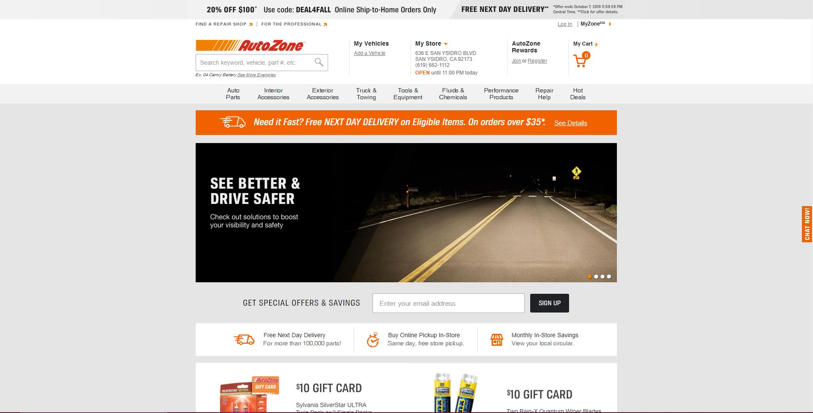
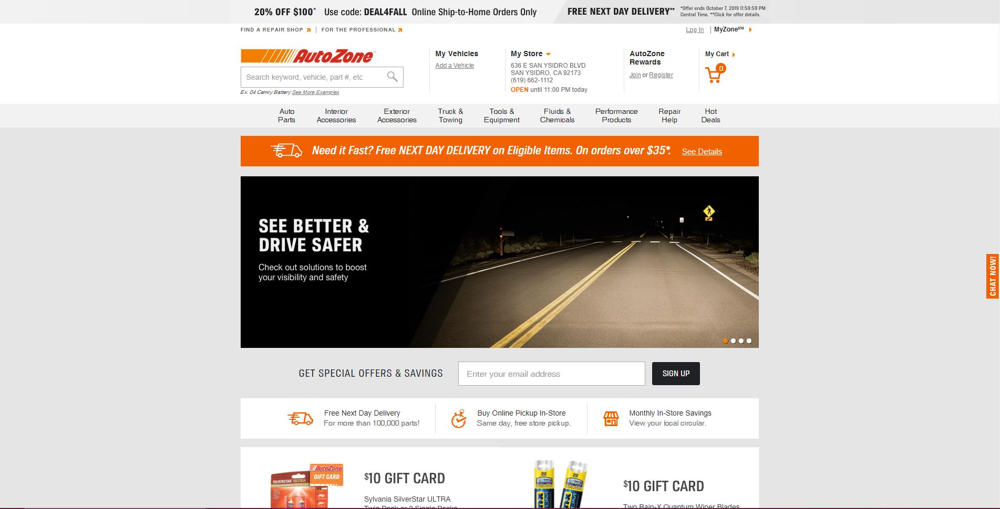
PROBLEM
The largest problem I had with JapanParts is that it is very cluttered, unclear, and does not totally follow typical Western UX "rules". I understand that the website is based in Japan, so I decided to redesign the website with Western audiences in mind.
"How can I make this website easier for non-Japanese natives to shop and purchase parts?"
What I noticed from the websites I listed above, is that they are mostly image heavy and price heavy. Most the websites will first show image, part name, and price up front so you can easily scan through items. In JapanParts, it is very text heavy and they provide a lot of informational resources "prematurely" or "unnecessarily".
I planned to
take the strengths of other e-commerce websites and try to implement them into JapanParts. With no experience, I have to show that I at least have the basics of design down.
Secondly, I needed to try to
design within the means of the stakeholder. Because redesigning a whole site just for 1 audience is costly and timely, I wanted to change the design without deviating too much from their "template" and functionality.
Lastly, I had to
streamline the shopping process from start to end as shopping is a complete user experience.
PERSONA
The Car Enthusiast
I created a persona of the type of persona who would likely shop on JapanParts.com
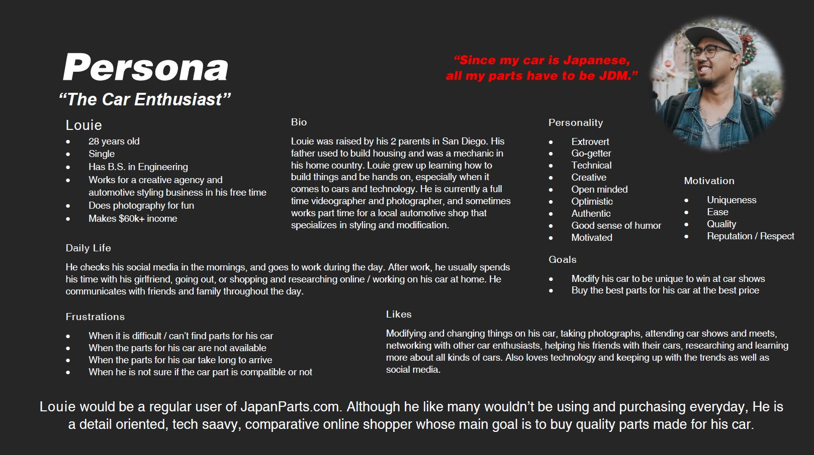
STORYBOARD
I created what a typical scenario of shopping on JapanParts.com would look like from a user journey perspective.
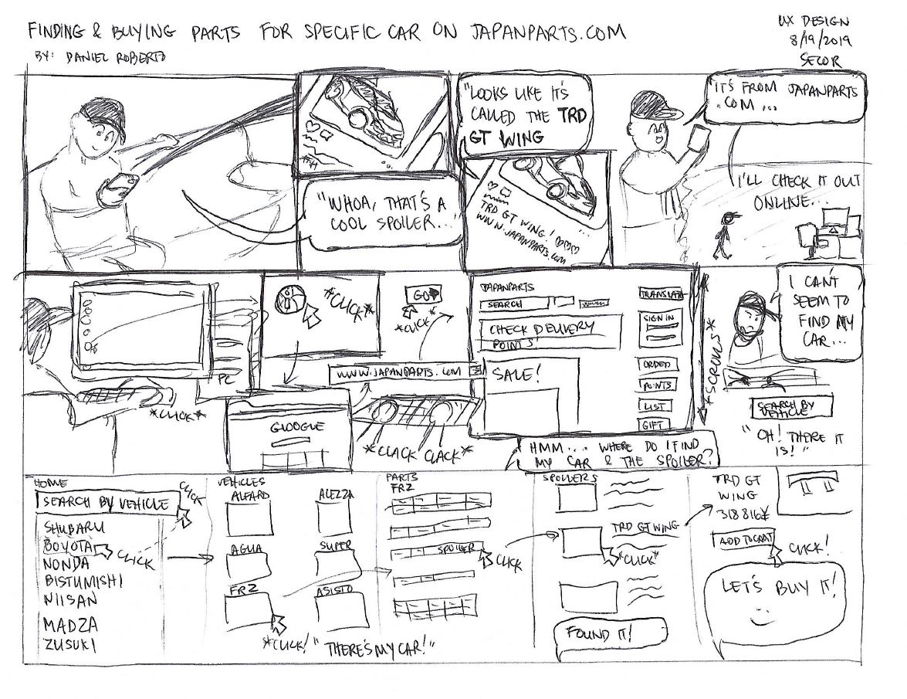
WIREFRAMING
This was my first time ever using Axure for wireframing. I was quite limited in what I was able to produce since I was not familiar with the program.

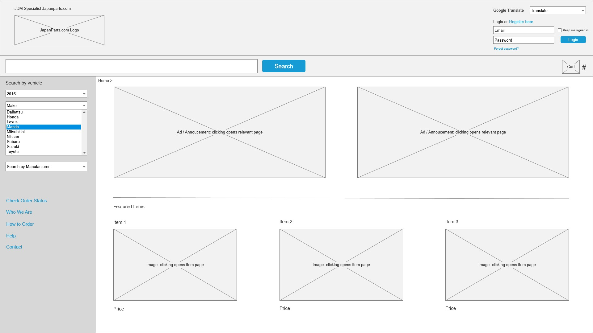

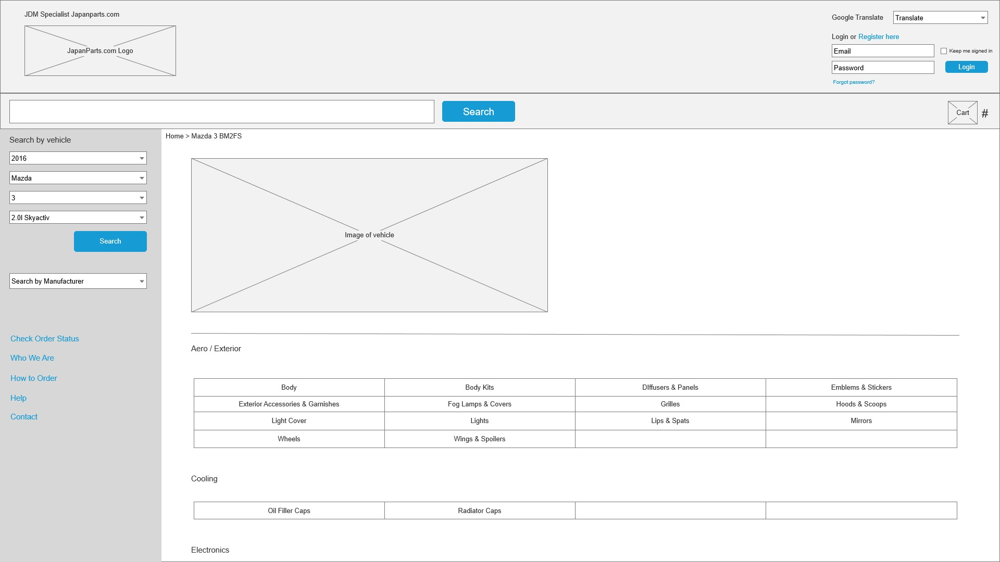
PROTOTYPING
In addition to how it was my first time using Axure, it was really fun using the tool to add functionality without having to code an actual website as a prototype.

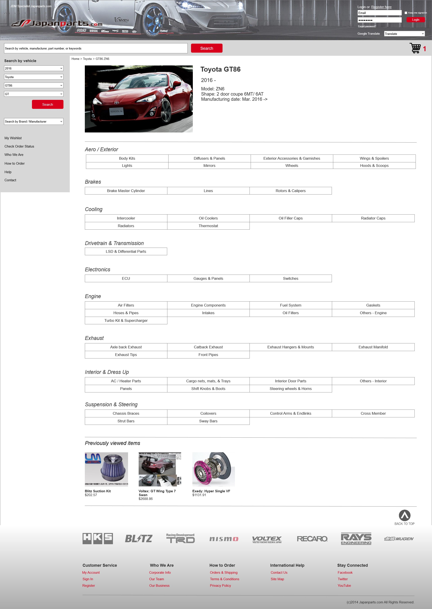
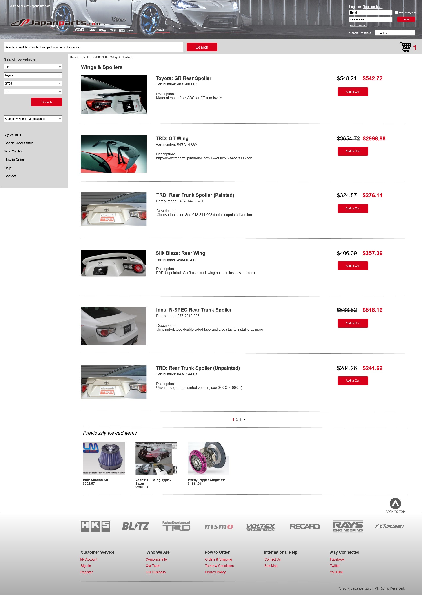
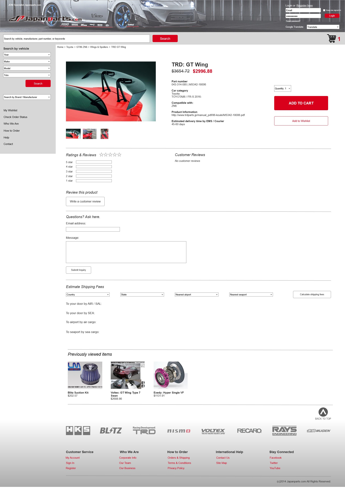
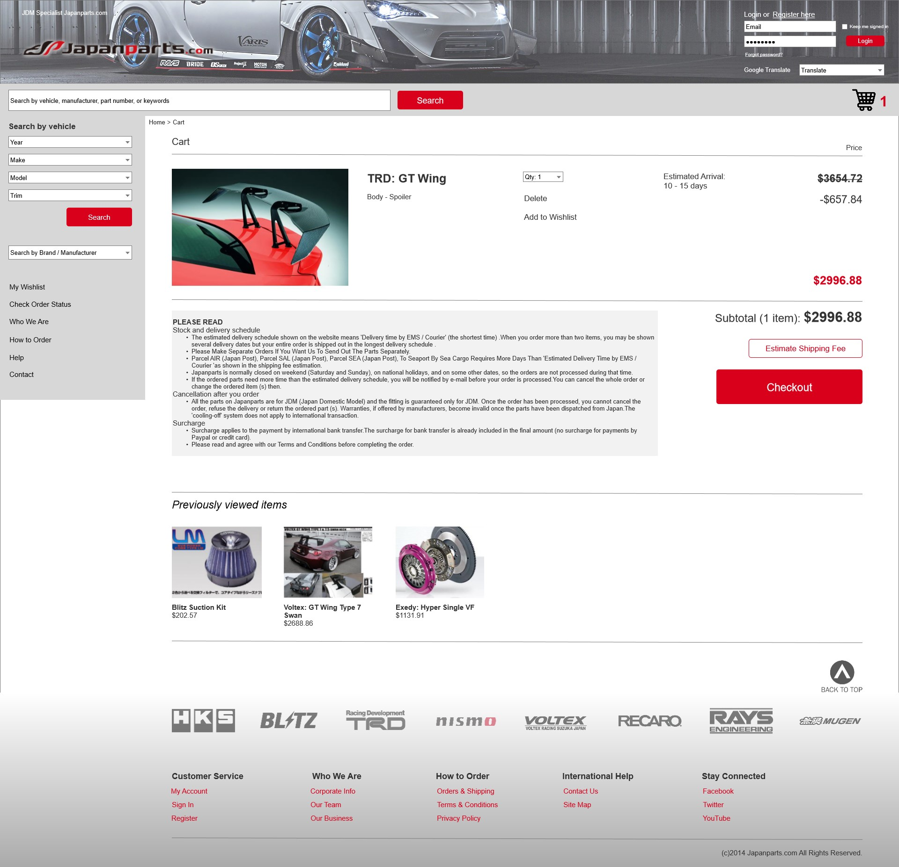
Although it isn't drastically different, I wanted to just refresh the website to make it clearer and cleaner. Sometimes little can do a lot.
CONCLUSION
I didn’t know exactly what I wanted JapanParts.com to look
like. With all the other websites, there was a lot of other ways
to make the website look newer, fresher, and modern.
However, I tried to constrain myself into working with what
we have. I felt like with a website and enormous stock they
have, they wouldn’t want a complete redesign of the website,
mostly a refresh. I tried to make do with what their website is
currently, and try to make it simpler, cleaner, and easier to
navigate. If I didn't limit myself, there are a lot of different and possibly better ways to redesign the website to be more modern and usable.
Click on the image below to view the complete presentation and demonstration of my redesign.
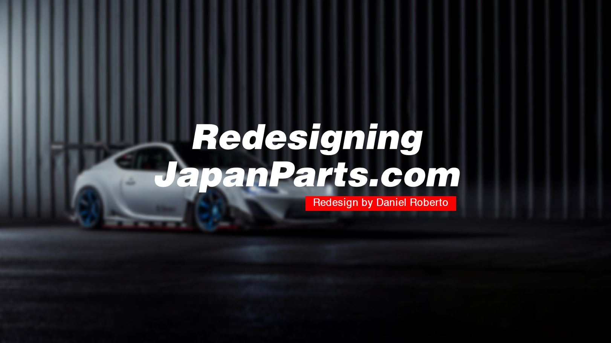